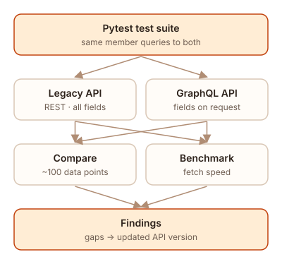

This was internal work, so it is described in general terms. No proprietary code or data is shown.
The problem
The legacy API used REST, and every GET request returned every data point for a member, whether it was needed or not. The new API used GraphQL, so callers could ask for just the fields they wanted. Before anyone switched over, the team needed proof that the new API returned the same data and returned it faster.
What I did
- Built a Pytest suite that requested the same members from both APIs and compared the results field by field, across roughly 100 data points.
- Used Postman to explore both APIs and reproduce mismatches by hand when a test failed.
- Benchmarked fetch speed for member data on both APIs.

Result
- Found data mismatches and fields missing from the new API before it replaced the old one.
- The team fixed the small issues quickly. For the bigger ones, my findings plus what the team already knew led them to switch to an updated version of the API rather than patch the old one.
- The benchmarks showed the GraphQL API was faster at fetching member data.
What I learned
This was my first real project on a production system, and it's where I learned to have a test first mentality. I would constantly be testing before moving forward, and made sure to test all edge cases. I also saw how a careful side-by-side comparison can change a team's direction, not just catch bugs.